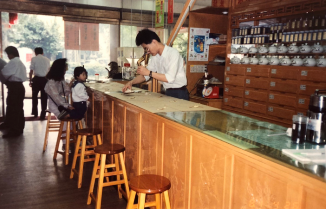
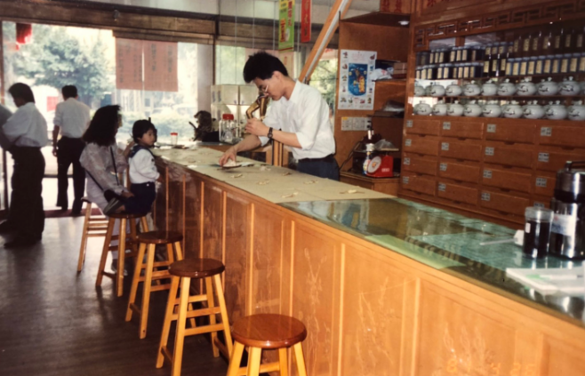
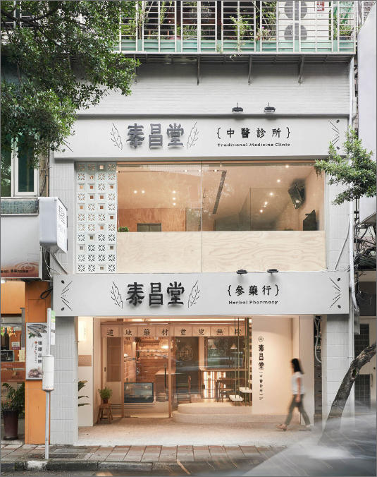
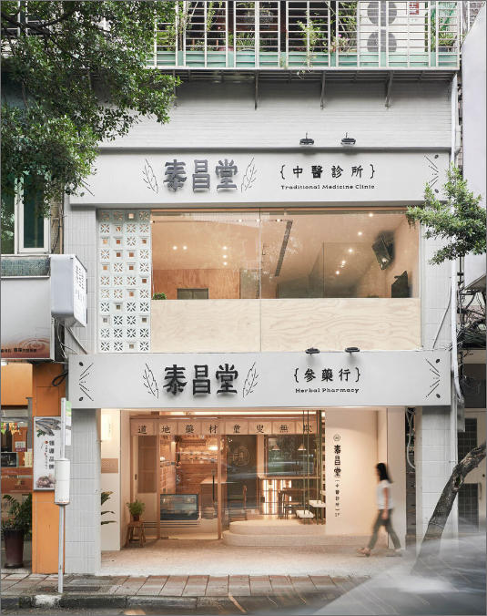

「道地藥材，童叟無欺」
創辦人沈老闆秉持著這樣的想法，
從中藥學徒做起，並在天母地區創立了中藥行泰昌堂。
01
起源 / origin

起源 / origin
中醫不只是醫學，更是一種民俗的價值與傳承。
富有千年歷史源流的中華文化，保留在傳統的藥材與醫學之中。
創辦人沈老闆秉持著這樣的想法，從中藥學徒做起，並在天母地區創立了中藥行泰昌堂。

02
歷史 / History
歷史 / History
｢泰｣字在易經裡是天地之氣互相交和而通泰，意味著一片和氣，上下交融，有如春天般的美好。
｢昌｣字本身互相對稱，意味著四平八穩而踏實。
泰昌堂的意象，是交和且踏實，在這段的40年裡歲月裡，藥房承載著中藥香與人情味，並且陪伴著許許多多的民眾長大。
03
傳承 / Pass the torch

傳承 / Pass the torch
在2020年，三位中醫師決定延續這樣的傳統在地文化，並且結合自己所學的專業，重新整合了藥行與中醫診所。
過往發生的「傳承」，或多或少都被血脈所侷限；但泰昌堂的老藥師秉持著傳賢不傳子，
將店舖、知識交棒給來中藥房學習的後輩。
上下兩代靠著彼此對中藥/中醫的喜愛，互相傳遞信任與熱情，建立在智慧與工藝上的情感，
遂長出比血親更堅韌的信念——「傳承」此字即是泰昌堂最閃亮的價值。

地址： 111台北市士林區中山北路六段208號
電話 02 2833 7421
營業時間：週一至週五09:00 – 21:30
週六：09:00 – 17:30 週日:休息